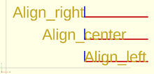

text = "Align"; font = "Liberation Sans"; halign = [ [10, "left"], [50, "center"], [90, "right"] ]; for (a = halign) { translate([140, a[0], 0]) { color("red") cube([115, 2,0.1]); color("blue") cube([2, 20,0.1]); linear_extrude(height = 0.5) { text(text = str(text,"_",a[1]), font = font, size = 20, halign = a[1]); } } }

OpenSCAD horizontal text alignment
Created with the Personal Edition of HelpNDoc: Full-featured multi-format Help generator